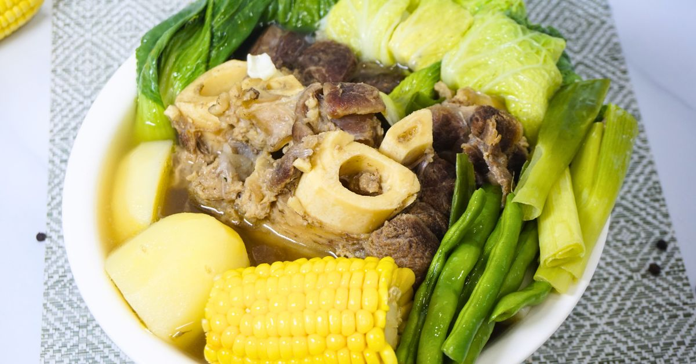

Beef Bulalo

Description
Beef Bulalo is a classic Filipino soup made from beef shanks with marrow, simmered for hours until the broth turns rich and flavorful. The dish is completed with corn, potatoes, cabbage, and other vegetables, making it both hearty and comforting.
Ingredients
- beef shanks (with bone marrow)
- 1 large onion
- whole black pepper
- fish sauce
- onion leeks
- corn cobs
- potatoes
- cabbage
- bok choy
- salt and pepper
- 10 cups of water
Steps
- In a large pot, combine the beef shanks with ten cups of water and bring to a boil over medium heat, skimming off any scum to keep the broth clear.
- Add the onion and whole black pepper, then reduce the heat and simmer for about two to three hours, or until the beef is tender and the marrow is soft.
- Stir in the fish sauce and onion leeks, and let the broth simmer for another five minutes so the flavors blend well.
- Add the corn and potatoes, cooking for about 10 to 15 minutes until the potatoes are tender.
- Mix in the cabbage and bok choy, and cook just until crisp-tender, about two to three minutes.
- Taste the broth, adjust the seasoning with salt and pepper, then ladle into bowls and serve hot with steamed rice.
Source:
Home
Next | Tortang Talong